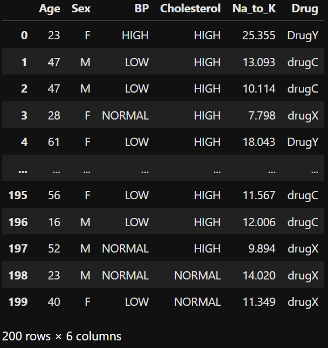
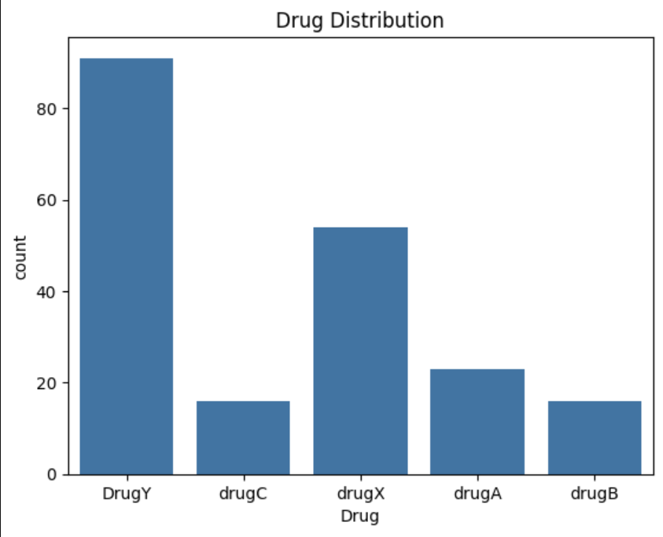
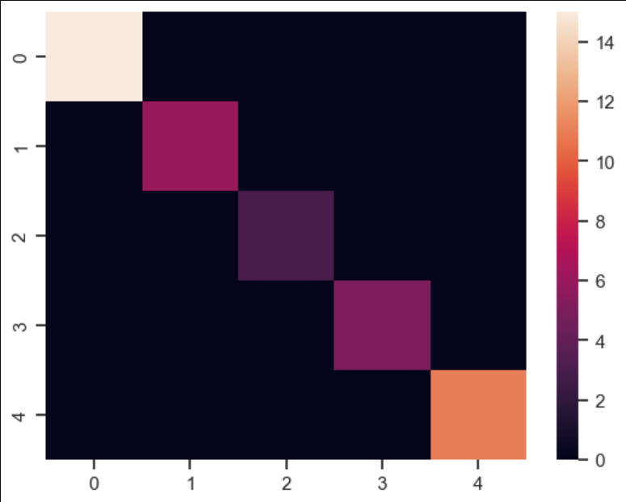
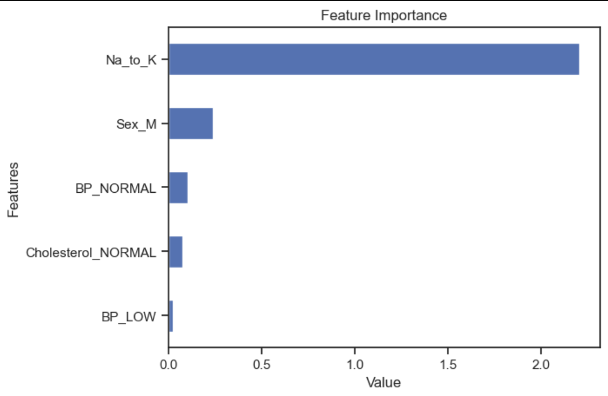

In this blog post, we shall delve into a machine learning project that concentrates on classifying drugs according to patient features. The dataset assigned for this task encapsulates patients’ information and the prescribed medications. To predict the suitable drug for a patient, our objective entails constructing and assessing two classification models: Logistic Regression and Random Forest.
Our dataset contains details of 200 rows and 6 columns. Each column is a variable, and the variables are : Age, Sex, Blood Pressure, Cholestrol, The ratio of Sodium to Potassium in the Blood and finally, the drug type. This can be verified by running
df = pd.read_csv("drug200.csv")
df

We can check for duplicates in the dataset using df.duplicated().sum() here, the output is 0, implying that there are no duplicates. Further, we can generate plots to visualize the distribution of each target varible. For example, we can see the count of each drug using :
sns.countplot(x=df['Drug'])
plt.title('Drug Distribution number');

Here, we will define features (X) and target (y).
X = df.drop('Drug' , axis='columns')
y = df['Drug']
X = pd.get_dummies(X)
Now, we will spilt the dataset into test and training data.
X_train , X_test , y_train , y_test = train_test_split(X , y , test_size=0.2 , shuffle= True , random_state=42)
The dataset is split into training and testing sets, with 80% of the data used for training and 20% for testing.
A Logistic Regression model is trained on the training set, and its performance is evaluated on the test set. This includes calculating accuracy, generating a classification report, and visualizing the confusion matrix.
lr_model = LogisticRegression(max_iter=1500)
lr_model.fit(X_train, y_train)
lr_model.score(X_train , y_train)
lr_pred = lr_model.predict(X_test)
on running cpp accuracy_score(y_test , lr_pred), we get 1. An accuracy of 1 corresponds to 100%, indicating that the model has made correct predictions for all instances in the dataset.
We can generate a confusion matrix using:
cpp sns.heatmap(confusion_matrix(y_test , lr_pred));
as we can see in the confusion matrix diagram, the diagonals are colored and everything else is black (0)! This indicates that the model is performing well.
Similar to the Logistic Regression model, a Random Forest classifier is trained and evaluated on the test set.
RF_model = RandomForestClassifier(n_estimators=200)
RF_model.fit(X_train, y_train)
RF_pred = RF_model.predict(X_test)
On running accuracy_score(y_test, RF_pred), we get 1. An accuracy of 1 corresponds to 100%, indicating that the model has made correct predictions for all instances in the dataset.
We can generate a confusion matrix using:
sns.heatmap(confusion_matrix(y_test, RF_pred));

As we can see in the confusion matrix diagram, the diagonals are colored and everything else is black (0)! This indicates that the model is performing well.
This section visualizes the feature importance for the Logistic Regression model, providing insights into which features contribute more to the model’s predictions. We can run the following code to find it out:
features = X_test.columns
importance_f = lr_model.coef_[0]
feat_imp = pd.Series(importance_f, index=features).sort_values()
feat_imp.tail().plot(kind='barh')
plt.xlabel("Value")
plt.ylabel("Features")
plt.title("Feature Importance");

In this blog post, we explored a drug classification project using machine learning. We started by understanding the dataset, visualizing key features, and preprocessing the data. Two classification models, Logistic Regression and Random Forest, were trained and evaluated. The blog post concludes by highlighting the importance of certain features in predicting drug classes. I used 2 models, logitic regression model and random forest model, and they both got 100% accuracy in training and testing.
Source: drug-classification